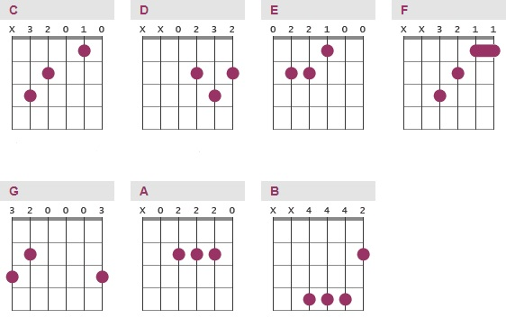

Major chords

To read a chord chart, you must understand its layout. The vertical lines represent the strings on your guitar, with the leftmost line representing the 6th string (the lowest sounding) and the rightmost line representing the 1st string (the highest sounding). The horizontal lines represent the fret bars and the spaces between them are the frets themselves. The fret closest to the top of the chart is the 1st fret on your guitar unless stated otherwise. The purple dots represent where you place your fingers to create the chord.